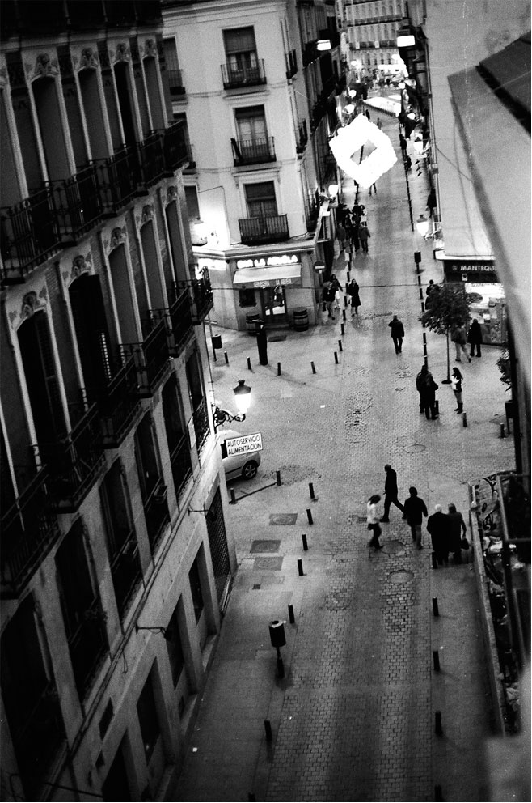
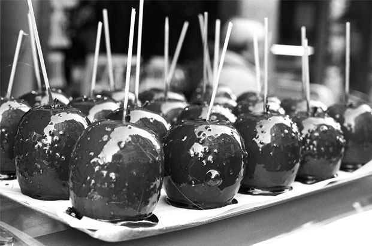
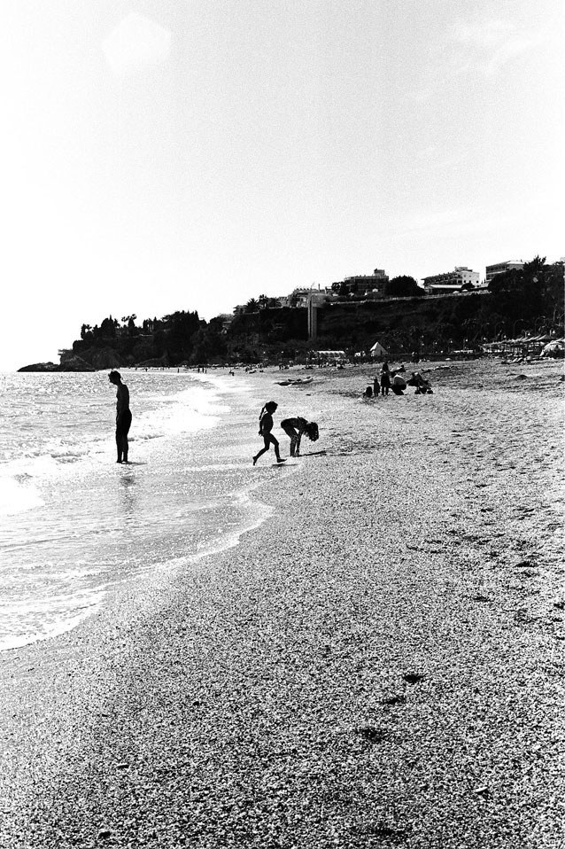
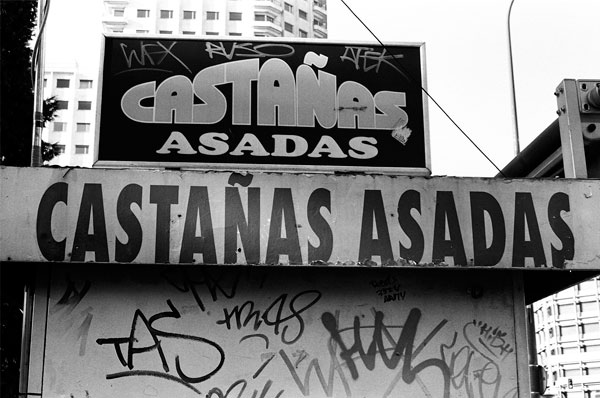
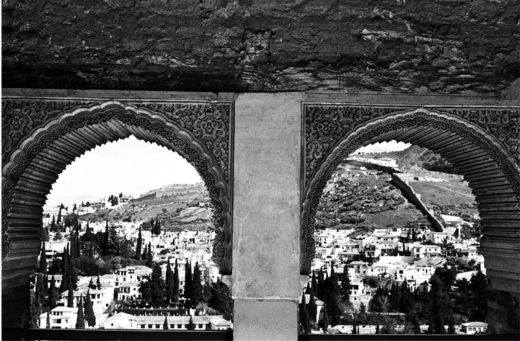

EUROPE THRU A LENS
Through the Eyes and Words of Andrea Fischer
Andrea Fischer, 22, spent a year studying abroad in Spain for a year. A photographer in her heart, the best way to document her experience was with a 35 mm. This is her experience traveling around Europe with her camera. See Europe through her eyes, and take a journey through her pictures.
One could say that Madrid is the city that never sleeps. In this photo, which was taken in the heart of the city- Sol- it is evident that the night is calling. This image is a view from my friends' balcony that will be implanted in my memory for years to come. The city noise was serene and welcoming; I could stay perched on that narrow balcony for hours. This photo screams Madrid. How it makes me want to frolic down those old streets, with the eccentric buzz of the locals conversations ringing in my ears, while anticipating the night, which will prevail into dawn.

When I think about Paris, the sense of taste overcomes all others, and my sweet tooth yearns to be satisfied. Look closely and you see historic, luscious buildings in the background reflected in the caramel apples. I think what is so attractive about Paris is essentially all that is represented in this photo- genuine parisian street vendors and gorgeous streets aligned with striking architecture. Banana nutella crepe anyone?


In Nerja- a coastal town in Southern Spain on the Mediterranean Sea- we are able to imagine ourselves partaking in what is certainly a painfully beautiful walk on this rocky beach. The sun is scalding and the sea hot. Tourists flood the beach- attracted to the wondrous views and of course- to the fresh paella that an old local man named Ayo prepares day after day in a huge paella pan atop a rustic fire just 30 feet off the the shoreline.

Chestnuts roasting on an open fire.... We all know this song, but how many of us have actually seen or tasted this event? Castañas Asadas, or Roasted Chestnuts, are sold in little carts like this all throughout Madrid around Christmas time. The streets are infused with an overwhelmingly strong, yet pleasant smoky, nutty scent. The rich chestnuts melt in your mouth, leaving behind a salty aftertaste. A delicious snack around the holidays, which is conveniently located every few blocks in the city's center.
Deep in the south of Spain, in a city called Granada, there lies a palace and fortress complex completed during the thirteenth century- The Alhambra- which is the most exquisitely detailed and breathtaking construction I have ever laid eyes on.
The Alhambra combines the natural with the man made. This photograph interprets this beautiful aspect of the Alhambra, as we are able to look out onto the congruently fresh white homes and hilly landscape of Granada through the architectural decor of the bewildering arcs.
CONTACT FOR PRINTS: andrea.michelle.fischer@gmail.com